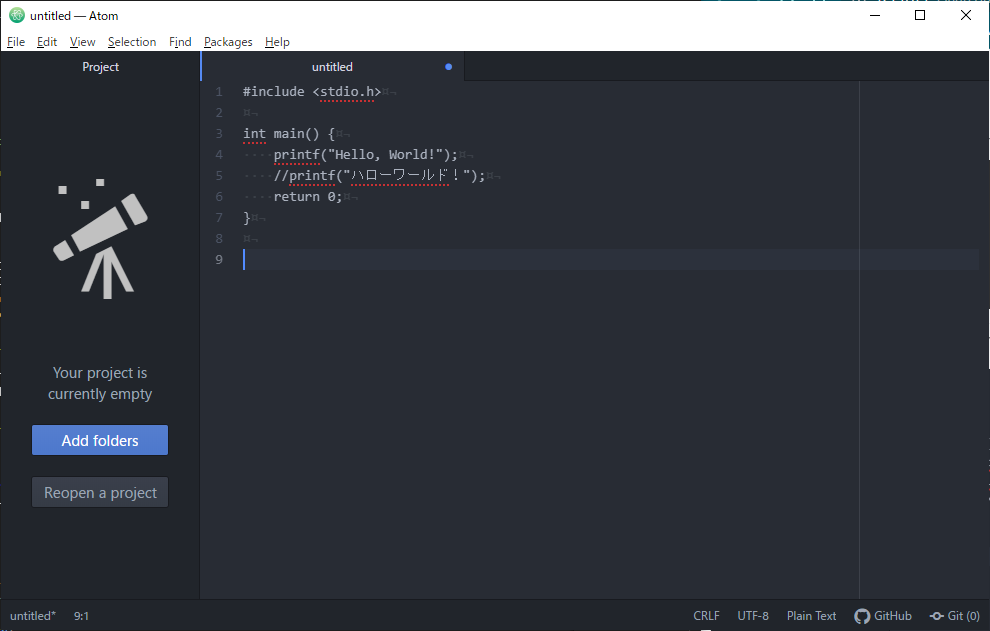
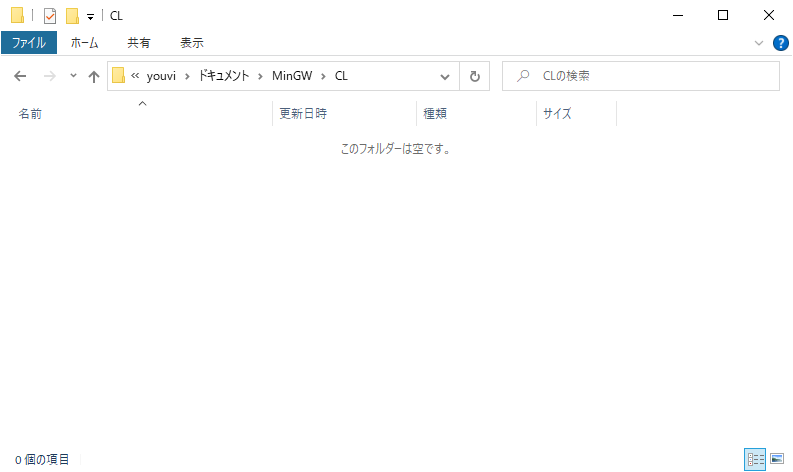
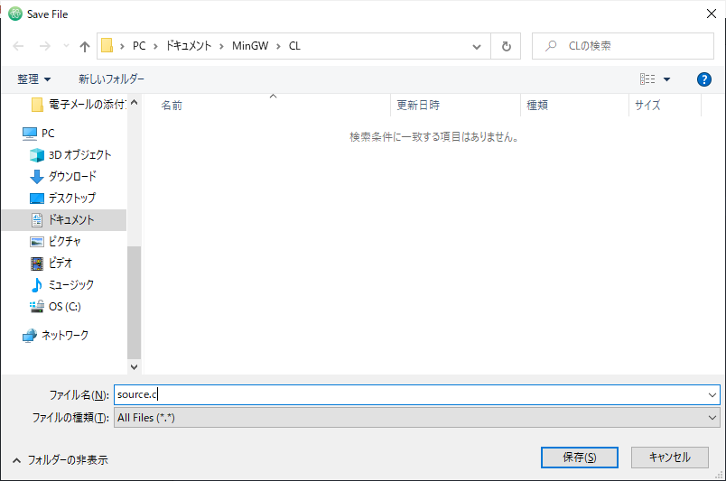
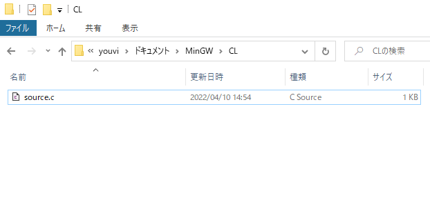
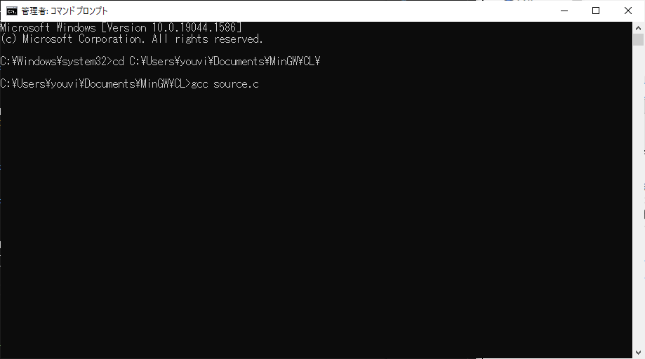
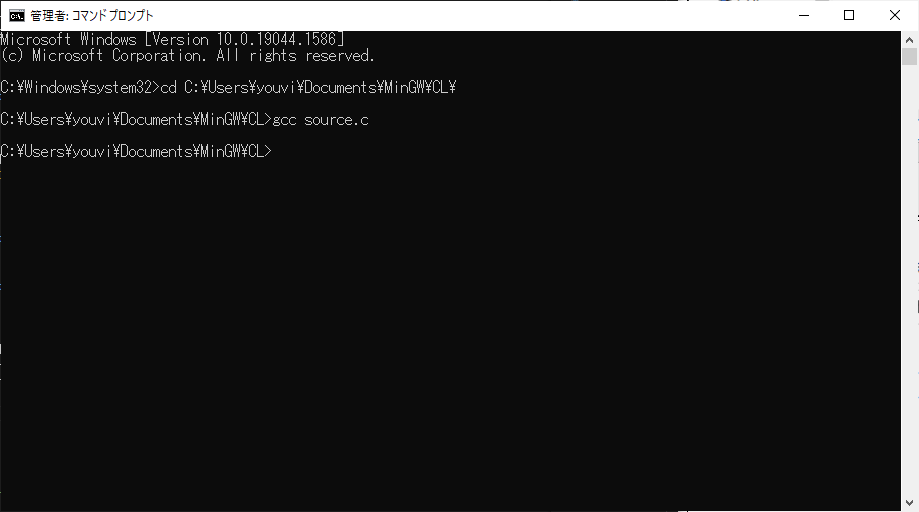
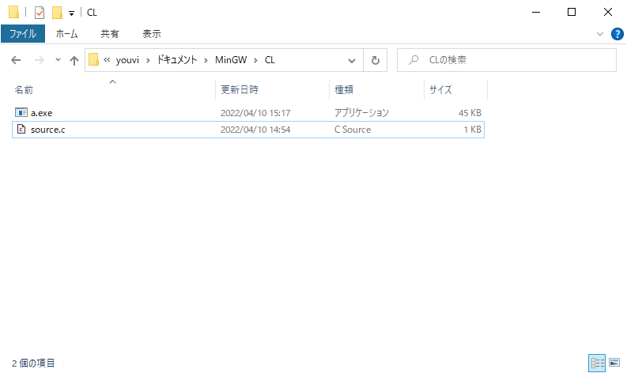
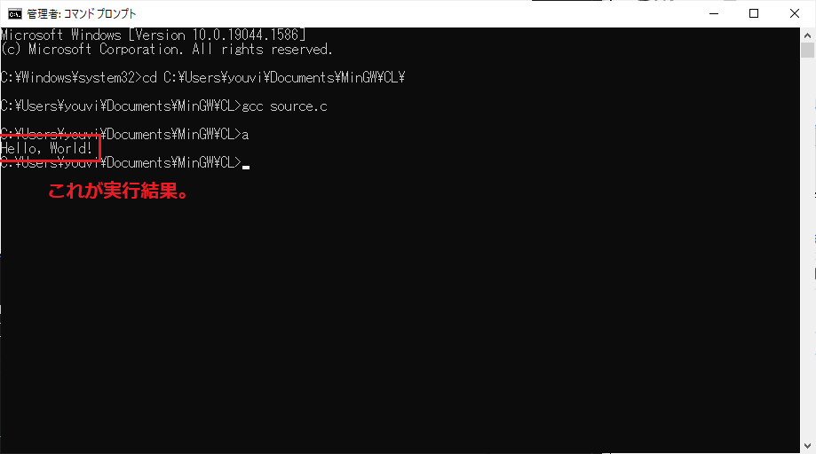
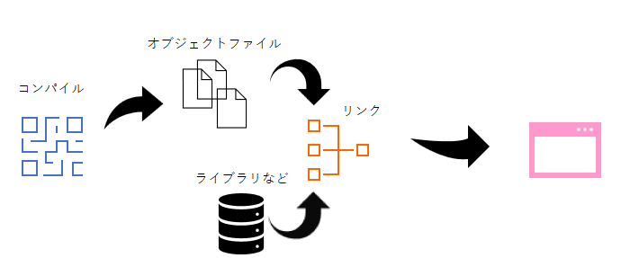

exeファイルの生成
説明ばかりだとつまらないと思うので、早速プログラムを書いていきましょう^^
プログラミングは通常テキストデータを作成します。
プログラミングを行うために適したテキスト編集ソフト(テキストエディタ)は世の中に数多くありますので、好きなものを使いましょう。
Windows標準のメモ帳で頑張る事も出来ますが、難易度が高いです。無料のテキストエディタはたくさんあるので、遠慮なくインストールして使いましょう。
Atom、TeraPad、Visual Studio Codeなどです。
それではプログラムコードから実行ファイルを作成するまで一通りやってみましょう。
まずは以下のコードをテキストエディタに入力して下さい。
#include <stdio.h>
int main() {
printf("Hello, World!");
//printf("ハローワールド！");
return 0;
}
|  |
テキストをそのままコピペしてもOK |
画像はGitHubという会社が作っているAtomというテキストエディタに貼り付けた様子です。
さきにも言いましたが、テキストエディタは何でもいいです。
プログラムのコードは以降「ソースコード」と表記します。
ソースコードが記載されたファイルはそのまま「ソースファイル」です。
次にソースファイルを保存しましょう。
ここでは以下のフォルダに「source」という名前で保存して説明を進めていきます(名前は好きなものを指定して下さい)。
|  |
ファイル名の後に「.c」を入力して下さい(例：source.c)。
これはC言語用のファイル拡張子で、「.txt」などではダメです。
|  |
|  |
ファイルの種類がC Sourceになりました。
このソースファイルをgccでコンパイルしていきます。
コマンドプロンプトを起動しましょう。
まずは先ほどソースファイルを保存したフォルダまで移動します。
フォルダの移動方法が分からなければ調べていただきたいのですが、「cd [移動先のフォルダ名]」で移動できます。
指定の場所まで移動出来たら「gcc [ソースファイル名]」(今回の場合はsource.c)を入力します。誤字脱字がないように注意しましょう。
Enterキーを押します。
|  |
コンパイルが実行されます。
画面では何も起こりませんね。
しかしエクスプローラーでソースファイルの場所を確認してみましょう。
|  |
いつの間にか「a.exe」があります。
これがコンパイルしてできたファイルになります(正確にはコンパイルとリンクという処理が行われている)。
できたファイルをダブルクリックしてみて下さい。
…どうですか？実はこの方法では何も見れません。
|  |
コマンドプロンプトから「a.exe」を実行して確認します。
先ほどのソースファイルの場所で「a.exe」(または「a」)を入力→Enterキーを押します。
すると何やら文字が出てきます。これが「source.c」の実行結果になります。
|  |
「.exe」について
コマンドプロンプトでアプリケーション(.exe)を実行する場合は、拡張子の指定は省略して何ら問題ありません。
ここまでがC言語でプログラムを作って実行するまでの基本的な手順となります。
ダブルクリックして起動しなかったのは、今回作成したソースコードが文字を出力するだけの命令しか書いていないからです。
ウインドウなどが出てきてうんぬんとかも書いておりません。なので、画面上では動いていないように見えたのです。
このソースコードの仕組みも解説したいのですが、まずはコンパイルとリンクについて説明します。
コンパイル
コンパイラ(MinGW)にソースファイルを突っ込むと.exeのアプリケーションファイルが作られました。
この時一体何が行われたのでしょう？
今回の表題になります。
 |
セクション1で掲示したサンプルフローですが、このフローは左から順に、
- 人間がソースコードを作成 (コーディング作業)
- 作成したソースファイル
- コンパイラ実行
- 生成されたオブジェクトファイル
- 実行形式アプリケーションファイル
となっています。
MinGWは3番のプログラムになります。
まずコンピュータ(パソコン)本体にはOSというものが入っていますよね。
一般的にWindows OS、Mac OSなどは知っているかと思います。
これらOSはカーネルとも呼ばれますが、人間が作成した文字や単語を直接は読めません。
OSが読めるのは2進数だけで構成された機械語と呼ばれるもののみです。
コアなIT業界人からはマシン語、またはネイティブ・コードとも言われるものです。
プログラミング言語から機械語に変換する処理の事をコンパイルと言います。
そしてコンパイルを実行するソフトウェアの事をコンパイラと呼びます。
C言語なんかは直接機械語を生成するコンパイラを使いますが、これをネイティブコンパイラとも言うかもしれません。
それは他の高級言語(Javaなど)が直接機械語に翻訳しない事からこの呼び名があるものと思われます。
コンパイルされたソースファイルはオブジェクトファイルという人間が理解できないバイナリ・コードが記載されたファイルになります。
基本的にコンピュータと相手をする時は、入力、(演算)、出力を面倒見る必要があります。
つまり命令を出して、内部の演算部分を作って、出力したものを受けとらないといけません。
「演算」は括弧付きで記載していますが、演算については開発者としてコンピュータと関わる場合だけ関係があります。
ソフトを使用する人にとって演算は必要ないので、気にする必要はほとんどありません。
本当は「コンピューターの５大要素」という概念があるのですが、これについてはここでは説明しませんので気になる方はこちらから探してみて下さい。
後々解説するのですが、プログラミングを続けていくと必ずソースコードが長くなります。
一つのソースファイルに何千、何万、何十万もソースコードを並べる事はありません(そんなナンセンスな事したくないと思います)。
そうなってくるとソースファイルが複数になってきます。
するとそれだけファイルが増えるわけですから、当然入力が複数なら出力も・・・複数にはなりません。流石にそんなのは嫌ですよねf^^;
その複数の入力ファイルを一つの実行ファイルに結合する処理をリンクと言います。
そしてリンクを行うソフトウェアの事をリンカと呼びます。
通常、コンパイルによって作成されたオブジェクトファイルはそのまますぐコンパイラ内蔵のリンカに掛けられます。なのでリンカ単体のソフトウェアはほぼないです。
このリンカを経由して出てきたアウトプット(出力)ファイルが.exe形式などのアプリケーションです。
|  |
これがいわゆるコンパイラの仕事風景 |
「ライブラリ」についてはここでは説明しませんが、.exeと同じジャンルの処理のかたまりと覚えておけば良いかと思います。
これについてはまた別のセクションで解説できたらします。